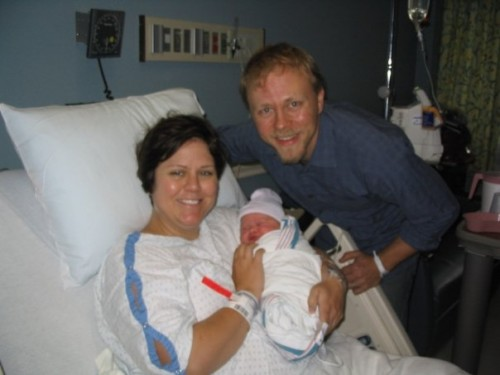
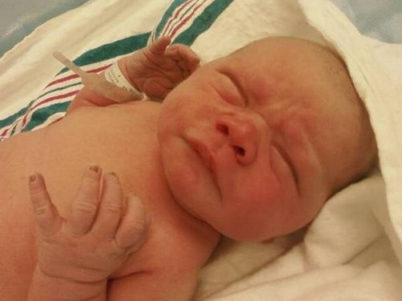

Kelly, Amelia and Ben Wilson
It’s one of those days you can read about and plan for, and you never know just what is going to happen. In one moment yesterday, I went from waiting to being told my wife and my baby girl’s life would teeter on the balance. But you’ve got to stay strong, ’cause really that’s all a guy can do. A smile, a hold of hands, a brush of the hair. There are no words, only small actions.
From doctors all the way down to the nurses aides and even the rooms at Baptist Hospital East were absolutely amazing, consummate professionals. Very PRO. From the moment we entered labor and delivery, the nurses were funny, engaging and knowledgeable. “Amazing Nurse Connie” made fast friends, like she knew us an age already. I miss each of them already, and it’s only been a day. There are no words to say how much that helps.
When she was awake, I was by Kelly’s side. My heart rose and fell watching those meters rise and fall. We exchanged knowing smiles, better than words. The decision to go into surgery was a quick one. “Are you OK with this?” I asked. No words, just a smile and a nod.
We parted for the first time, Kelly stronger than I at that moment. I sat alone in my own, private waiting room. My fear subsides slowly as I take it moment by moment. I am led by a nurse into the operating room, I saw Kelly. I saw inside Kelly. That was all I needed to see of that! Around the backside of the shield, I saw Kelly’s face and I saw her fear. Numb from the chest down, hard to breathe. A few words of encouragement. Small gestures. “Can you see anything?” “I can see what I want to see”
A peek. The head! Oh my god this is real.
A cry begets crying.
Around the side of the shield our doctor comes, our baby a grisly sight. The doctors work quickly to get the baby cleaned up, and soon I am looking over my beautiful baby girl, in what amounts to a fry warmer.
“Can I touch her?” It sounds naive now, but at the time – what was protocol? I’m new at this. One of the doctors asks “Did he just ask if he could touch her?” A small giggle, and a response: “Yep, you sure can! She’s all yours now…”
Amelia, mere moments after birth...
They swaddle the baby and hand her to me, and suddenly I realize that Kelly is still just across the room, frightened, alone. The floor is a maze of tubes, stands, chairs, feet. My god what if I drop her! I cross that abyss, successfully. No words, just a rock of the baby in my arms and a rake of my hand through Kelly’s hair.
And Kelly sees her baby up close for the first time. No words, just tears that stream back from the corners of her eyes to her temples, the world turned on it’s side in reality and in metaphor.
We meet the family later, and all five grandmothers are elated. All two grandfathers are proud, stoic. Uncles, aunts, beaming.
My father extends his hand to me, a handshake, no words. All is understood.


{kind=link}
{kind=link}
{kind=link}
{kind=link}